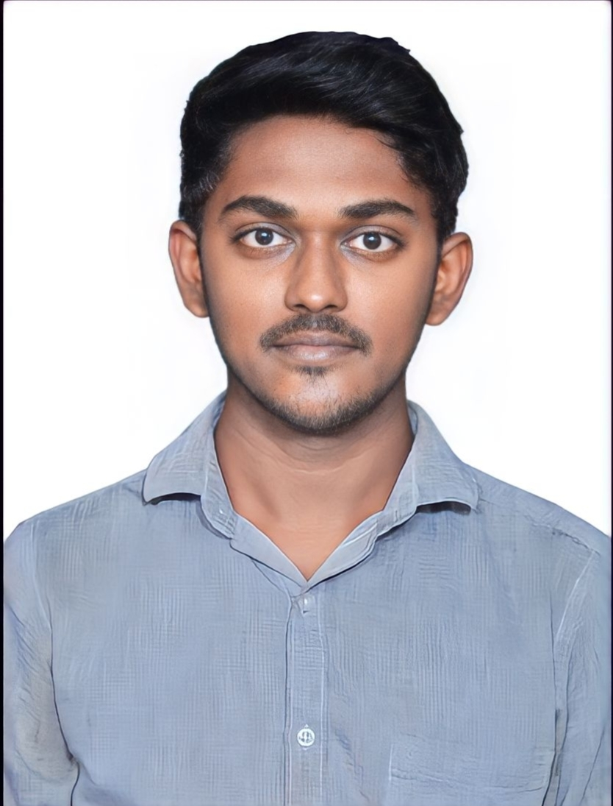

ARUNKUMAR S

Summary
Passionate IT fresher eager to learn, contribute, and innovate in the industry while embracing growth opportunities
Education
B.E ECE
- Knowledge Institute of Technology - Salem
- CGPA - 8.64
HSC
- Vedhha Vikass Macticulation School - Salem
- Percentage - 77.33
SSLC
- Vedhha Vikass Matriculation School - Salem
- Percentage - 96.02
Internships
Virtusa Consulting Services and Pvt. Ltd.
- Data Science (Intern delivery) (09/01/2023-30/04/2023)
- Internship encompassed comprehensive data science education, culminating in a mini project that showcased proficiency in data manipulation, visualization, and machine learning techniques.
Sparks Foundation.
- Web Development (01/06/2021-01/07/2021)
- Created a basic banking website using HTML, CSS and Javascript.
Skills
- Python Programming
- Java Programming.
- Data Science
- Web Development.
Certifications
- PCAP Certified Associate in Python Programming - Python Institute (15/03/2023).
- JLPT N5 Certified - Japan Foundation (01/13/2021).
- Praveen Uttarardh - DBHPS.
Contact